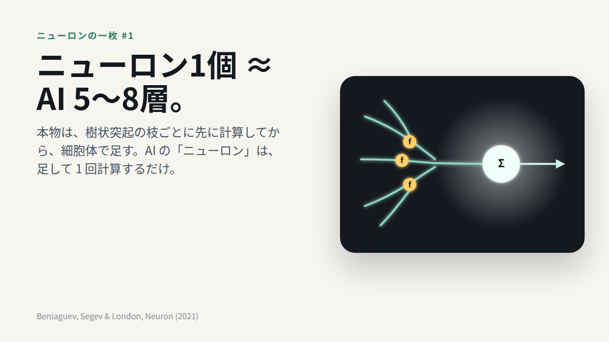

NEURON-NOTES · 2026-11-04
One real neuron ≈ a 5–8 layer deep net
ニューロン1個 ≈ AI 5〜8層

Conclusion. It took a 5–8 layer deep network to copy the output of one cortical neuron.
Why. Dendrites don't just pass signals along. Each branch does its own nonlinear step before the cell body adds everything up.
For people who build AI. The "neuron" in a neural network sums first and squashes once. A real neuron is closer to a small network by itself.
結論：大脳皮質のニューロン1個の出力をAIで真似たら、5〜8層が要った。
意味：樹状突起はただの電線ではない。枝ごとに先に計算してから、細胞体で足し合わされる。
AIを作る人へ：AIの「ニューロン」は、足して1回計算するだけ。本物のニューロンは、それだけで小さなネットワークに近い。
